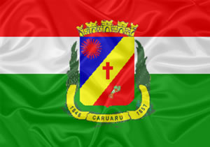

Sobre Caruaru

Localizada no Vale do Ipojuca, ao longo dos anos Caruaru recebeu várias denominações,
sendo conhecida também como a ‘Princesa do Agreste’, ‘Capital do Agreste’ e a ‘Capital do Forró’.
O município é mais populoso do interior de Pernambuco, com uma população residente de 289.086 habitantes,
conforme dados do IBGE, relativos ao ano de 2009, que vivem numa área territorial de 921 Km²,
tendo como padroeira Nossa Senhora das Dores.Atualmente Caruaru destaca-se como o mais importante
pólo econômico, médico-hospitalar, acadêmico, cultural e turístico do Agreste, sendo também
famosa por sua tradicional feira livre, enaltecida nos versos do compositor Onildo Almeida e na
voz do eterno Rei do Baião, Luiz Gonzaga. A cidade abriga um dos mais importantes entrepostos
comerciais do Nordeste e tem no Alto do Moura o Maior Centro de Artes Figurativas da América Latina,
título este concedido pela Unesco, como reconhecimento de uma história iniciada na década de 40
do século passado, através do seu mais ilustre filho, Vitalino Pereira dos Santos, o Mestre Vitalino,
ceramista que fez história através da criação de bonecos de barro, arte perpetuada entre seus familiares
e vários discípulos, representados nas gerações de artesãos, ainda hoje residentes na famosa vila.
Retirado do site oficial da
Prefeitura de Caruaru.